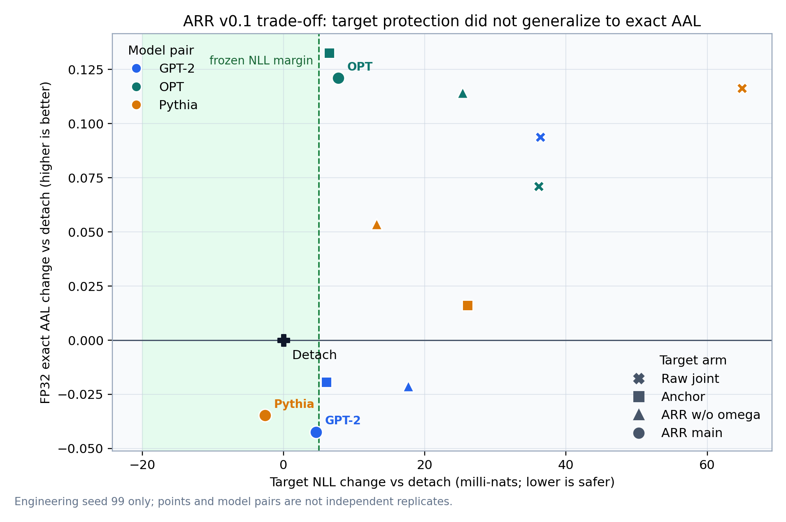
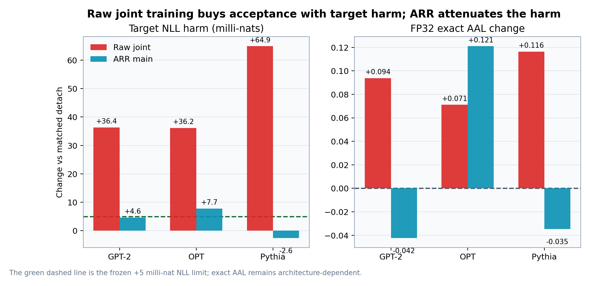
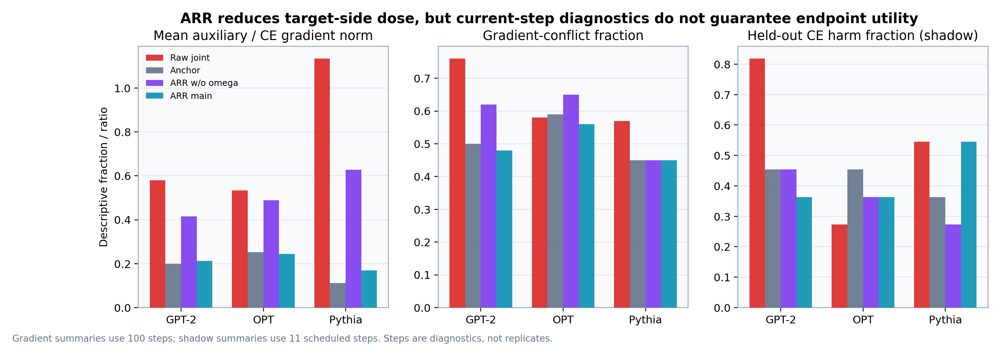

ARR v0.1: shared-mass responsibility routing 실험 보고서¶
판정: Stage 0 identity PASS · Stage 1 engineering KILL 범위: engineering seed 99, 세 independent pretrained AR target/drafter pair 핵심: raw joint loss의 target 손상은 재현했고 ARR은 이를 크게 줄였지만, target non-inferiority와 exact AAL을 동시에 만족하지 못했다. Selection seeds
6–8은 sealed다.2026-07-17 후속 업데이트: 이 문서가 제안한 Coordinate-only ARR은 이후 별도 prospective v0.2 panel에서 구현·검증됐다. Target NLL 보호와 conditional target AAL은 통과했지만 diagonal exact AAL과 component Pareto가 실패했다. 최신 판정은
REPORT_COORDINATE_ARR_STAGE01_KO.md를 따른다.
0. 결론¶
이 실험은 연구 motivation과 제안 method를 분리해서 해석해야 한다.
- Motivation은 더 선명해졌다. Draft path loss를 target AdamW에 그대로 더한
path_naive는 matchedpath_detach보다 target NLL을 GPT/OPT/Pythia에서 각각+.0364 / +.0362 / +.0649악화시켰다. 동시에 FP32 exact AAL은+.0938 / +.0711 / +.1164증가했다. 즉 독립 pretrained AR pair에서도 speculative utility를 얻는 target-side joint update가 target quality를 희생하는 trade-off가 세 pair 모두에서 나타났다. - ARR의 보호 아이디어는 부분적으로 작동했다.
arr_main의 target NLL 차이는+.0046 / +.0077 / −.0026으로, raw joint harm를 각각 약87% / 79% / 104%줄였다. Shared-mass weight를 뺀arr_unweighted보다도 세 pair 모두 NLL이 좋았다. - 하지만 main-method 가설은 실패했다. Frozen NLL margin
+.005를 OPT가 넘었고, exact AAL은−.0424 / +.1210 / −.0348로 두 pair에서 감소했다.arr_anchor와arr_unweighted에 대한 component Pareto gate도 통과하지 못했다. - 따라서 ARR v0.1은 engineering KILL이다. Seed 99 결과를 본 뒤 threshold를 완화하거나 selection seeds를 열지 않는다.

1. 연구 질문과 범위¶
Target p_theta와 drafter q_phi는 tokenizer-compatible token ID만 공유한다.
Backbone, embedding, hidden state, LM head, LoRA parameter와 optimizer는 전부 분리돼
있다. MEDUSA, EAGLE, native draft head와 shared representation은 포함하지 않는다.
Target-side draft loss는 exact speculative decoding의 필수 조건이 아니라 이 연구가 시험하는 bidirectional extension이다. Exact decoding은 최종 target 분포를 보존하지만, joint training이 original target 품질을 보존해 주지는 않는다.
비교하는 정보 경로는 다음과 같다.
current target p_theta -- pathwise Hybrid LK teacher --> drafter q_phi
current target p_theta <-- q proposal-aware target loss -- drafter q_phi
직접 관련된 공개 연구 가운데
Halfway Speculative Decoding은
target과 EAGLE-style head를 함께 학습하지만 target hidden feature를 사용한다.
Online Speculative Decoding,
DistillSpec,
Draft-OPD는 proposal/rejection-aware 학습의 유용성을
보이지만 target LM은 고정한다. CoSpec은
draft/target mismatch에서 RL arbitration을 학습하지만 target-only distribution을
보존하는 exact SD가 아니라 두 모델의 지식을 decoding 때 결합하는 설정이다.
2026-07-17까지 확인한 공개 문헌에서
independent pretrained AR pair × proposal-aware target update × exact SD × target
non-inferiority 전체를 직접 검증한 선행 방법은 찾지 못했다. 이는 검색 범위 내 gap이며
최초성을 단정하지 않는다.
2. ARR v0.1 가설¶
Frozen adapter-disabled original target을 p0, live target을 p, drafter를 q라 한다.
Drafter가 token z를 제안했을 때 original target과 공유하는 exact proposal mass의
posterior responsibility를 사용한다.
omega(z) = min(1, p0(z) / q(z))
q(z) * omega(z) = min(p0(z), q(z))
proposal mass = shared mass + draft-only excess
= min(p0,q) + [q-p0]+
q(z)>p0(z)일 때만 proposal coordinate를 올린 safe label r를 만든다.
r(z) = t
r(v != z) = p0(v) * (1-t) / (1-p0(z))
p0(z) <= t <= q(z)
TV(p0,r) <= 0.01
KL(r || p0) <= 0.005
이전 proposal의 frozen responsibility product를 S_k라 하면 target loss는 다음과 같다.
L_target = L_native_CE
+ sum_{i,k} S_{i,k} * omega_{i,k} * active_{i,k}
* H(stopgrad(r_{i,k}), p_theta(.|h_{i,k})) / (B*K)
Target에는 positive soft-label cross-entropy만 흐르고 p0, q, sampling, omega,
S, active, r는 stop-gradient다. Drafter loss는
LK Losses의 pathwise Hybrid LK를 사용했다.
L_draft = sum_{i,k} S_live * HybridLK(stopgrad(p_theta), q_phi) / (B*K)
eta = 3, gamma = 1, K = 3
eta=3은 confirmatory panel과 맞춘 Hybrid LK schedule이고 target-side coefficient
beta=1은 본 연구의 실험값이다. 상세 정의는
ARR method proposal ARR_METHOD_PROPOSAL_KO.md과
prospective protocol ARR_VALIDATION_PROTOCOL_KO.md에 고정했다.
3. 실험 설계¶
세 pair를 사용했다.
- GPT-2 / DistilGPT-2
- OPT-350M / OPT-125M
- Pythia-410M / Pythia-70M
모든 arm은 같은 initialization, minibatch order, optimizer/scheduler, token exposure와
counter-keyed proposal uniform을 공유했다. WikiText-103에서 100 step, batch 4,
sequence 64, rank-8 LoRA, BF16, 별도 target/draft AdamW(2e-4, betas .9/.95)로
학습했다. Exact rollout은 FP32 eager에서 WikiText-2, TinyStories, GSM8K text,
K=3, 32 generated tokens로 실행했다.
| Arm | Target update | 목적 |
|---|---|---|
path_detach |
native CE | matched reference |
path_naive |
CE + raw target-side path Hybrid LK | motivation/harm reference |
arr_anchor |
CE + routed p0 label |
anchor/data control |
arr_unweighted |
CE + safe r, current-token omega 없음 |
responsibility ablation |
arr_main |
CE + S*omega*active*H(r,p) |
제안 방법 |
Stage 0에서 세 pair의 10-step arr_forced_off가 path_detach와 target/draft parameter,
전체 Adam state hash와 endpoint에서 bit-exact였다. Core simplex, shared-mass identity,
TV/KL cap, gradient detach와 exact-zero identity를 포함해 12개 gate check가 통과했다.
4. 결과¶
아래 값은 같은 pair의 path_detach 대비 차이다. NLL은 낮을수록, exact AAL은
높을수록 좋다.
| Pair | Arm | Delta target NLL | Delta exact AAL | Active responsibility | Cost |
|---|---|---|---|---|---|
| GPT-2 | path_naive |
+.036352 |
+.093838 |
0 |
1.22x |
| GPT-2 | arr_main |
+.004600 |
-.042380 |
.238 |
1.89x |
| OPT | path_naive |
+.036157 |
+.071113 |
0 |
1.29x |
| OPT | arr_main |
+.007737 |
+.120975 |
.230 |
1.57x |
| Pythia | path_naive |
+.064916 |
+.116371 |
0 |
1.21x |
| Pythia | arr_main |
-.002617 |
-.034755 |
.126 |
1.60x |

4.1 Motivation: utility와 target quality의 직접 trade-off¶
path_naive는 세 pair 모두 exact AAL을 높였지만 target NLL도 모두 악화시켰다.
이는 “draft-aware target update가 무조건 나쁘다”는 주장이 아니라, speculative
objective의 utility가 target 품질 비용 없이 공짜로 생기지 않는다는 관찰이다.
같은 seed의 detach와 naive는 직접 조작인 target-side path gradient 적용 여부만 다르고,
그 뒤 target trajectory가 유도한 draft co-adaptation은 endpoint total effect에 포함된다.
4.2 Protection: shared-mass weight는 harm attenuator로 작동¶
arr_main은 arr_unweighted보다 target NLL이 GPT/OPT/Pythia에서 각각
.0131 / .0176 / .0158 낮았다. Raw joint 대비 target harm도 크게 줄었다.
따라서 omega가 무의미한 것은 아니다. 그러나 exact AAL 차이는
−.0211 / +.0067 / −.0884로, shared-mass posterior가 target update의 utility
posterior는 아니었다.
4.3 Safe label의 local gain은 endpoint gain이 아니었다¶
arr_main은 arr_anchor보다 target NLL을 GPT와 Pythia에서는 개선하고 OPT에서는
.0013 악화시켰다. 그러나 exact AAL은 세 pair 모두 anchor보다
−.0231 / −.0117 / −.0509 낮았다. Sampled token과 현재 context를 고정한 local
acceptance gain은 다음 효과를 포함하지 않는다.
- 한 adapter update가 다른 context와 vocabulary coordinate에 일반화하는 효과
- native CE와 auxiliary가 같은 Adam moments에 누적되는 효과
- target 변화에 따라 drafter proposal과 이후 prefix가 다시 변하는 co-adaptation
- frozen
p0responsibility와 final live target verifier 사이의 차이
4.4 사후 objective 분해: full-label CE에는 dense p0 anchor가 있었다¶
Safe label은 proposal coordinate 하나만 바꾸지만, 그 label에 대한 full-vocabulary
cross-entropy는 coordinate-only objective가 아니다. t=r(z),
p_{\neg z}(v)=p(v)/(1-p(z))라 두면 정확히 다음처럼 분해된다.
첫 항은 proposal token z의 확률을 직접 조절한다. 두 번째 항은 나머지 전체
vocabulary의 조건부분포를 frozen original target p0로 당기는 dense anchor다.
Route-weighted 평균 1-t는 GPT/OPT/Pythia에서 .825/.812/.813이었다. 또한
arr_main의 aux/CE norm ratio는 steps 1–10의 .034/.026/.019에서 steps 76–100의
.272/.305/.276으로 커졌고, detach 대비 final target–base KL은
.367→.316 / .538→.436 / .591→.483으로 줄었다. 이는 native CE가 live target을
p0에서 이동시킬수록 anchor gradient가 뒤늦게 커지는 해석과 일치한다.
정확한 weight 정의와 수치는
dense-anchor diagnostics v2 artifacts/arr_shared_mass_v0_1_stage1_diagnostics_v2/arr_anchor_decomposition_diagnostics.csv에
고정했다.
다만 현재 history는 같은 live trajectory에서 Bernoulli coordinate gradient와
conditional-anchor gradient를 직접 따로 저장하지 않았다. 따라서 dense anchor가
항상 gradient를 지배했다고 입증한 것은 아니며, 구조적 분해와 late-stage telemetry가
그 가설을 강하게 지지하는 수준이다. arr_main의 exact AAL이 arr_anchor보다 세
pair 모두 낮았다는 사실도, v0.1의 proposal move가 anchor control을 넘어 안정적인
endpoint utility를 만들었다는 증거가 없음을 보여준다.
5. Gradient와 Adam same-state 진단¶
arr_main은 raw joint보다 auxiliary dose와 Adam deflection을 줄였다.
| Pair | Aux/CE raw→ARR | Negative cosine raw→ARR | Held-out exact harm raw→ARR | Aux-induced update raw→ARR |
|---|---|---|---|---|
| GPT-2 | .580→.212 |
76%→48% |
9/10→4/10 |
13.1%→5.7% |
| OPT | .533→.244 |
58%→56% |
3/10→4/10 |
15.7%→7.4% |
| Pythia | 1.134→.169 |
57%→45% |
6/10→6/10 |
32.7%→10.9% |
Held-out harm는 learning rate가 0이 아닌 steps {10,...,100}의 동일 pre-step
parameter/Adam state에서 실제 CE+aux candidate와 CE-only shadow를 비교한 횟수다.
10개 step은 독립 replicate가 아니며 endpoint mediation decomposition도 아니다.
arr_main의 mean CE–aux cosine은 +.008/−.012/+.007로 거의 0이었다. 따라서 이
seed에서 target 보호의 주된 설명은 gradient angle 정렬보다 route에 의해 auxiliary
dose와 Adam deflection이 작아진 것이다. 특히 OPT에서는 current-step shadow 평균이
반드시 해롭지 않았어도 endpoint NLL gate가 실패했다. Instantaneous cosine이나
one-step counterfactual만으로 cumulative Adam trajectory를 보증할 수 없다.

6. Prospective gate 판정¶
| Gate | 판정 | 관찰 |
|---|---|---|
| Stage-0 identity | PASS | 12/12 checks |
| Target NLL non-inferiority | FAIL | OPT +.007737 > +.005 |
| FP32 exact AAL | FAIL | nonnegative 1/3 pair |
| Component Pareto support | FAIL | anchor 0/3, unweighted 1/3 |
| Bidirectional information path | PASS | responsibility .126–.238, nonzero dose/hash change |
| Trust/numerics | PASS | violation 0 |
| Exact greedy identity | PASS | all rollout endpoints 1.0 |
| Training cost | PASS | 1.57–1.89x <= 2.5x |
사전 규칙의 결론은 하나다.
ARR v0.1: engineering KILL. Selection seeds 6–8 remain sealed.
7. 무엇이 남았고 무엇을 바꿔야 하는가¶
이 결과는 연구 motivation을 약화시키지 않는다. 오히려 raw joint가 세 pair 모두에서 AAL을 늘리는 동시에 target NLL을 해치는 명확한 trade-off를 만들었다. 반증된 것은 “frozen-target shared-mass posterior와 one-coordinate safe label만으로 target-safe exact-AAL gain을 architecture-robust하게 만들 수 있다”는 v0.1 가설이다.
가장 직접적인 후속 가설은 Coordinate-only ARR이다. omega, prefix survival,
active route와 TV/KL cap은 유지하되 target auxiliary를 다음 Bernoulli CE로 바꾼다.
이 objective에서도 proposal, omega, route와 목적확률 t가 모두 drafter q에
의존하므로 target은 drafter-aware하며, target→draft Hybrid LK와 draft→target route의
bidirectionality도 유지된다. 달라지는 것은 acceptance와 직접 관계없는
p0(·|¬z) dense anchor를 제거한다는 점이다.
다음 engineering panel은 원인을 섞지 않도록 우선
path_detach / arr_main / arr_anchor / coordinate_arr_main /
coordinate_arr_unweighted만 비교한다. 같은 live state와 context에서
g_dense, g_coord, g_anchor, g_dense−g_coord를 따로 기록해 anchor-dominance
가설을 직접 검증해야 한다. omega는 exact-contract responsibility로 유지하되
parameter-space utility selector로 오해하지 않고, final live-target multi-token
acceptance를 endpoint에서 별도로 검증한다. CE-only moment firewall이나 virtual
draft-response는 coordinate-only objective가 먼저 engineering NLL–AAL gate를 통과한
뒤 별도 factorial로 다룬다.
새 설계는 v0.2 protocol과 새 output root를 동결한 뒤 exposed seed 99에서만 먼저 재검증한다. 이번 결과로 threshold를 조정하거나 selection seeds 6–8을 여는 방식은 사용하지 않는다. Coordinate-only ARR은 후속 연구 가설이지 아직 검증된 개선법이 아니다.
8. 해석 한계¶
- Stage 1은 pair당 engineering seed 하나다. Training seed가 inferential unit이며 step, token, prompt, corpus와 sampling seed를 독립 표본으로 세지 않는다.
- 세 pair는 IID architecture sample이 아니다. Architecture-independent universal law나 scratch foundation pretraining behavior를 주장하지 않는다.
- 100-step LoRA adaptation 결과다. Full fine-tuning, 장기 학습과 five-task downstream non-inferiority는 ARR v0.1 KILL 뒤 실행하지 않았다.
- Teacher-forced overlap은 actual acceptance length가 아니다. 보고한 primary utility는 FP32 eager exact rollout의 AAL이다.
- Cross-arm endpoint 차이는 target trajectory가 유도한 draft co-adaptation을 포함한 total effect이며 component의 유일한 additive causal decomposition이 아니다.
9. 재현 산출물¶
- Frozen method manifest
ARR_V0_1_STAGE01_MANIFEST.json - Stage-0 identity runs
runs/arr_shared_mass_v0_1_stage0_identities_v1/ - Stage-1 training runs
runs/arr_shared_mass_v0_1_stage1_engineering_v1/ - FP32 eager exact rollouts
runs/arr_shared_mass_v0_1_stage1_fp32_rollouts_v1/ - Primary fail-loud analysis
artifacts/arr_shared_mass_v0_1_stage1_analysis_v1/ - Audited visual reanalysis
artifacts/arr_shared_mass_v0_1_stage1_analysis_v2/ - Initial fail-loud deep diagnostics
artifacts/arr_shared_mass_v0_1_stage1_diagnostics_v1/ - Dense-anchor augmented diagnostics
artifacts/arr_shared_mass_v0_1_stage1_diagnostics_v2/
Model adapter weights는 Git에 저장하지 않는다. Config, metrics, histories, rollout rows, aggregate tables, figures와 SHA-256 analysis manifest는 보존한다. 이 결과는 peer-reviewed proof가 아니라 prospective engineering falsification 결과다.